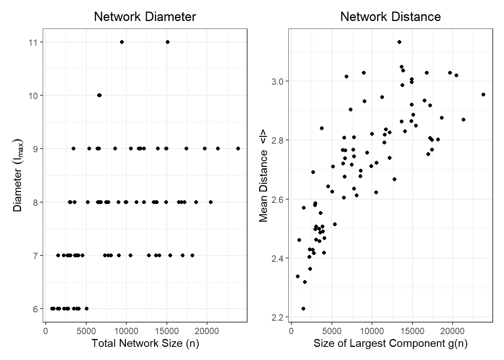
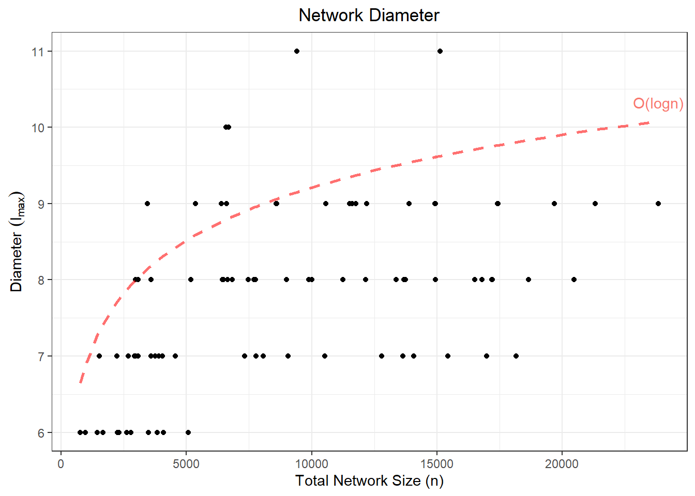
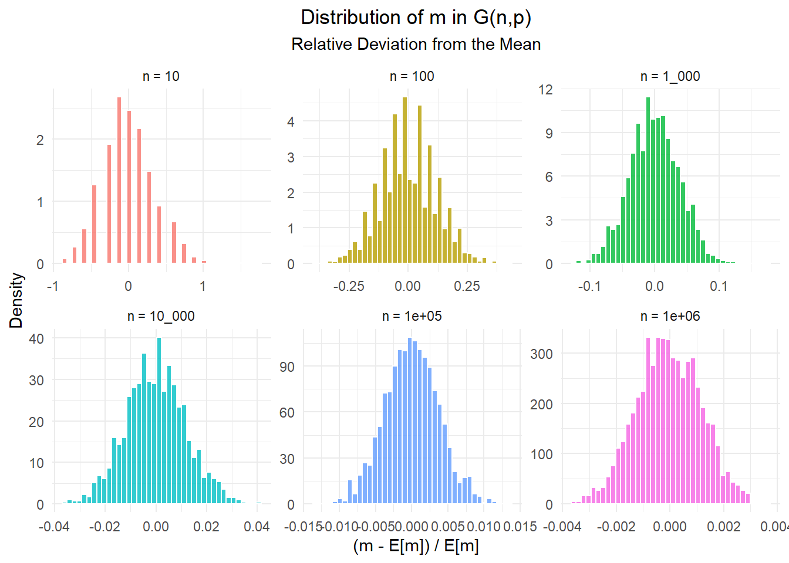
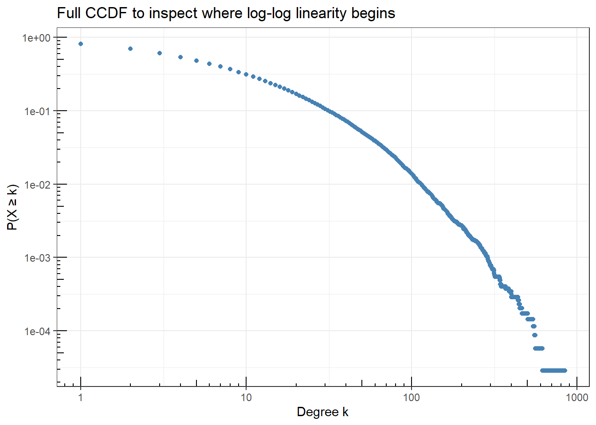
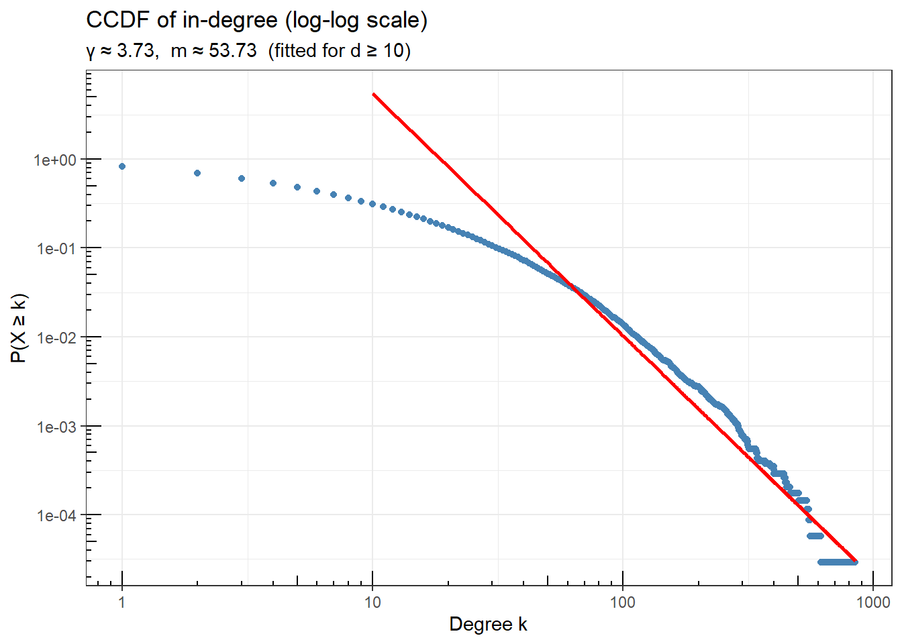
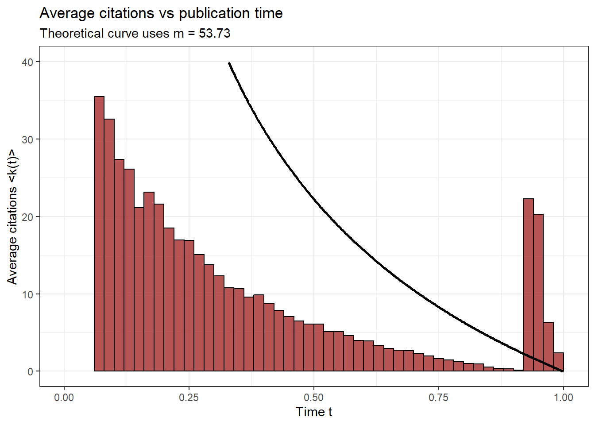
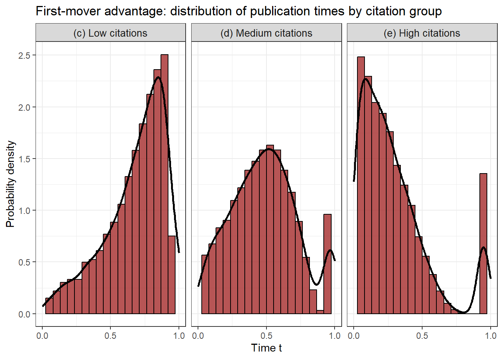

library(R.matlab) # read .mat files
library(igraph) # network/graph funcs
library(tidyverse) # clean data management
library(tidygraph) # tidy wrapper around igraph objects
library(ggraph) # ggplot for igraph objects
library(patchwork) # stitch tidyverse graphs tg
library(furrr) # optimize data pipeline
library(glue) # printfProblem Set 1
Network Measures & Random Graph Models
Libraries
1 Network Measures
A common property of social networks is that they have very small diameters relative to their total size. This property is sometimes called the “small-world phenomenon” and is the origin of the popular phrase “six degrees of separation”. In class, we saw that a way to formalize small worlds was that the diameter \(D\) is \(O(log(n))\). In general, we think the property holds when the diameter grows less than linearly with n. For the following exercises, use the facebook small dataset:
data loading
rm(list=ls())
# iterate thru files in facebook_small
folder_path <- file.path("C:/Users/T14/7Programming/R/class/networks/problem_sets/ps01/data/facebook_small")
file_list <- list.files(path = folder_path,
pattern = "\\.mat$",
full.names = TRUE)
facebook_graphs <- list() #init empty matrix
for (file in file_list){
clean_name <- tools::file_path_sans_ext(basename(file)) # extract school name
raw_mat <- readMat(file) # load in sparse matrix object
adj_matrix <- raw_mat$A # extract adj matrix stored as "A"
tbl_g <- graph_from_adjacency_matrix( # convert to igraph object
adj_matrix,
mode = "undirected",
diag = FALSE # remove self-loops
) %>%
as_tbl_graph() # store as a tidy graph object -- memory efficient
facebook_graphs[[clean_name]] <- tbl_g # object store in list, end of iteration
}
rm(raw_mat, adj_matrix, tbl_g) # rm temporary objects -- free up memory
gc()(a) Compute Diameters & Distances
- For each network, compute the diameter \(\ell_{max}\) of the largest component of the network and the mean geodesic distance ⟨\(\ell\)⟩ between pairs of vertices in the largest component of the network.
test on subset
# test on single matrix
test <- facebook_graphs$American75
g <- largest_component(test) # extract largest component
dia <- diameter(g, weights=NA) # diameter
dist <- mean_distance(g, weights=NA) # mean geo distance
school_name = names(facebook_graphs)[1]
data.frame(School = school_name,
Diameter = dia,
Mean_Distance = dist)
# test on subset
final_table <- list()
school_names <- names(facebook_graphs)
subset <- school_names[1:3]
plan(multisession, workers = parallel::detectCores() - 1)
time_taken <- system.time({
final_table <- future_map_dfr(subset, function(school) {
library(igraph)
library(tidygraph)
g_large <- largest_component(facebook_graphs[[school]])
data.frame(
School = school,
N = vcount(g_large),
Diameter = diameter(g_large, directed = FALSE, weights = NA),
Mean_Distance = mean_distance(g_large, directed = FALSE, weights = NA)
)
},
.options = furrr_options(
seed = TRUE,
globals = list(facebook_graphs = facebook_graphs) # explicitly export the data
))
})
plan(sequential)
print(time_taken)
print(final_table)code for calculating diameter, mean dist
plan(multisession, workers = parallel::detectCores() - 1)
time_taken <- system.time({
final_table <- future_map(file_list, function(file) {
school <- tools::file_path_sans_ext(basename(file))
tryCatch({
raw_mat <- readMat(file)
g <- graph_from_adjacency_matrix(raw_mat$A,
mode = "undirected",
diag = FALSE)
g_large <- largest_component(g)
data.frame(
School = school,
N_lg_component = vcount(g_large),
N_total = vcount(g),
Diameter = diameter(g_large,
directed = FALSE,
weights = NA),
Mean_Distance = mean_distance(g_large,
directed = FALSE,
weights = NA)
)
}, error = function(e) {
data.frame(
School = school,
N_lg_component = NA,
N_total = NA,
Diameter = NA,
Mean_Distance = NA
)
})
}, .options = furrr_options(seed = TRUE, packages = c("igraph", "R.matlab", "tools"))) |>
list_rbind()
})
plan(sequential)
write_csv(final_table, "facebook_network_measures.csv")
print(time_taken)
print(final_table)# load in data: school, diam, mean dist, network size, largest comp size
rm(list=ls())
df <- read_csv("data/facebook_network_measures.csv")
df %>%
select(School, Diameter, Mean_Distance) %>%
mutate(Mean_Distance = round(Mean_Distance, 2)) %>%
head(n=8)# A tibble: 8 × 3
School Diameter Mean_Distance
<chr> <dbl> <dbl>
1 American75 9 2.77
2 Amherst41 7 2.4
3 Baylor93 7 2.67
4 BC17 9 2.79
5 Bingham82 8 2.82
6 Bowdoin47 6 2.43
7 Brandeis99 7 2.49
8 Brown11 9 2.7 (b) Plot
- Make two figures, one showing \(\ell_{max}\) versus network size \(n\) and one showing ⟨\(\ell\)⟩ versus the size of the largest component \(n\).
plotting code
# dia vs network size
fig1<-ggplot(data=df) +
geom_point(aes(x=N_total, y=Diameter)) +
theme_minimal() +
labs(
title = "Network Diameter",
x = "Total Network Size (n)",
y = expression("Diameter " (l[max]))
) +
theme_bw()+
theme(
plot.title = element_text(hjust=0.5)
)
# dist v size of lg component g
fig2<-ggplot(data=df) +
geom_point(aes(x=N_lg_component, y=Mean_Distance)) +
theme_minimal() +
labs(
title = "Network Distance",
x = "Size of Largest Component g(n)",
y = expression("Mean Distance <l>")
) +
theme_bw()+
theme(
plot.title = element_text(hjust=0.5)
)
fig1 + fig2
(c) Six-Degrees
- Comment on the degree to which these figures support the six-degrees of separation idea.
# update to add log(n) line to graphs
fig1 +
geom_line(aes(x=N_total, y=log(N_total)),
color="red",
linetype="dashed",
alpha=0.56, lwd=1) +
geom_text(data = df %>% filter(N_total == max(N_total)),
aes(label = "O(logn)",
x = N_total + 0.5,
y = log(N_total) + 0.25,
color = "red")) +
guides(color = 'none')
Note that when we overlay the theoretical \(O(log(n))\) function over the first figure, we see that network diameter remains largely bounded between 6 and 9 across all network sizes up to ~23,000 nodes, consistent with the small-world / six-degrees-of-separation phenomenon. The theoretical \(log(n)\) curve provides a loose upper bound, and the observed diameters grow far more slowly than even that, which perhaps suggests that larger networks do not require substantially more hops to traverse.
For the second figure, we can associate a positive relationship between average distances between nodes and network size (largest component); this further reinforces the \(O(log(n))\) growth rate, as distances between nodes continue to grow as we increase the overall size, but at a very slow rate (y-axis only spans from ~2.2-3.2). Note that the \(O(log(n))\) relationship is defined for the diameter, which is the ‘worst-case’ scenario of the largest path in the network; the average-distance is more representative of the whole population.
(d) Facebook Diameter Today
- Briefly discuss whether and why you think the diameter of Facebook has increased, stayed the same, or decreased relative to these values, since 2005. (Recall that Facebook now claims to have roughly \(10^9\) accounts.)
Code
fb_avg_dist = mean(df$Mean_Distance)
fb_avg_diam = mean(df$Diameter)
total_network_2005 <- sum(df$N_total)
diam_dist_factor = round(fb_avg_diam/fb_avg_dist,2)We think the diameter of Facebook has likely slightly increased or even stayed the same as their network size has increased. If its diameter truly obeys such a \(O(log(n))\) growth rate, then \(log(10^9)\) should evaluate to \(\approx 20.7\); however, as the network grows larger, it is likelier that any individual (node) has more friends on the network and thereby is more well-connected. Thus, we would expected the average degree (number of friends) \(\gamma\) to increase in the network. Suppose that \(\gamma = 200\), (which feels like a reasonable assumption for a network that has grown to \(n = 10^9\) over 20 years); then, we would evaluate \(\frac{ln10^9}{ln200} \approx 3.9\). In our data, the diameter seems to be \(\approx\) 2.87x larger than our average distance (both averaged across all 85 networks). Thus, we could estimate the modern diameter of the entire Facebook network to be somewhere near \(\approx 11.2\). This is a surprisingly small increase in the diameter for a \(\approx\) 1282x total increase in the network size; although, one must consider the fact that this data consists of university networks, and as such they are likelier to be more clustered than the average community.
(e) Bonus: Large Data
- (Bonus points) Can you redo exercise a) with facebook large dataset instead? What can you do to improve the runtime?
Hint: The facebook small dataset, contains 85 .mat files. Each file is an edge list for a 2005 snapshot of a Facebook social network among university students and faculty within some university. You can download the dataset from the class website.
Note that even though the .mat data objects were sparse matrices (which are memory efficient), these networks can explode in size quickly as the number of connections increase. A huge bottleneck in the first question was calculating average distances between nodes in a network. This is an \(O(n^2)\) operation, as we need to calculate the distance between every node in a \((n \times n)\) matrix, and thereby requires more and more computing power very quickly as we increase our network size and complexity (for only 100_000 observations, this is already an operation of \(10^10\) calculations!). A strategy to improve performance would thereby be one where we approximate distances between nodes, rather than extracting exact values. For example, we may look at take a random sample of ~100 nodes and calculate average distances / find the max geodesic path for them, and use that value as an approximation of our true values. This strategy is well-justified, since we saw evidence from part (b-c) that distances/diameters don’t seem to vary wildly amongst nodes, but rather cluster around ~2-3/6-9.
2 Random Graph Models
Consider the random graph \(G(n, p)\) with average degree \(c\).
(a) Triangles
- Show that in the limit of large \(n\) the expected number of triangles in the network is \(\frac{1}{6}c^3\)
In other words, show that the number of triangles is constant, neither growing nor vanishing in the limit of large \(n\).
Solution:
Note that the formula for expected number of triangles in a network with average degree of \(c\) is found as \({n \choose 3} p^3\), which can be rewritten as:
\[\frac{n!}{(n-3)! \cdot 3!} = \frac{1}{6} \frac{n(n-1)(n-2) \dots}{(n-3)(n-4) \dots}\]
Which then simplifies into:
\[\frac{1}{6} n(n-1)(n-2)\]
Thus, we want to show that:
\[\lim_{n \rightarrow \infty} \frac{1}{6} n(n-1)(n-2)\cdot p^3 = \frac{1}{6} c^3\]
To do so, we must state the relationship of \(c = (n-1)p\), where we will, for simplicity, rewrite this as \(c \approx np\) (since we are taking the limit to infinity, the difference between \(n\) and \(n-1\) is negligible and makes for smoother derivations).
We can then rewrite this (approximate) relationship as \(n \approx \frac{c}{p}\), meaning that evaluating the limit as \(n \rightarrow \infty\) is equivalent to taking \(\frac{c}{p} \rightarrow \infty\), which is true when \(p \rightarrow 0\). Thus, we can rewrite this limit expression as:
\[\lim_{p \rightarrow 0} \frac{1}{6} n(n-1)(n-2)\cdot p^3\]
Next, if we substitute in \(n \approx \frac{c}{p}\), we can rewrite this expression as
\[\lim_{p \rightarrow 0} \frac{1}{6} \frac{c}{p}(\frac{c}{p}-1)(\frac{c}{p}-2)\cdot p^3\]
which, when we distribute the terms, are left with
\[\lim_{p \rightarrow 0} \frac{1}{6} \left(\frac{c^3}{p^3} - \frac{3c^2}{p^2} + \frac{2c}{p}\right)\cdot p^3\]
After distributing out the \(p^3\) to our polynomial, we are left with:
\[\lim_{p \rightarrow 0} \frac{1}{6} \left(c^3 - 3c^2p + 2cp^2\right)\]
which, when evaluated at the limit, converges to:
\[\lim_{p \rightarrow 0} \frac{1}{6} \left(c^3 - 3c^2(0) + 2c(0)^2\right) = \frac{1}{6} \left(c^3\right) \\ \blacksquare\]
(b) Connected Triples
- Show that the expected number of connected triples in the network is \(\frac{1}{2}nc^2\)
Solution:
Note that the expected number of connected triples in a network is given as \(3 \cdot {n \choose 3} \cdot p^2\), since for any group of three nodes, there are exactly three possible ways to form a triangle (A-B-C, A-C-B, & B-A-C). Thus, we can follow the same logic from part (a) and simplify this limit expression to become:
\[\lim_{p \rightarrow 0} \frac{1}{2} \left(nc^2 - 3n^2p^2 + 2np^2\right) \]
Which, when evaluated at the limit, simplifies to:
\[\lim_{p \rightarrow 0} \frac{1}{2} \left(nc^2 - 3n^2(0)^2 + 2n(0)^2\right) = \frac{1}{2} \left(nc^2\right) \\ \blacksquare\]
(c) Transitivity
- Calculate transitivity \(C\), as defined in the lecture notes, and confirm that it agrees for large \(n\) with the value given in the slides (i.e. \(C = \frac{c}{n−1}\))
Solution:
Given \(C \propto \frac{\# \text{expected number of triangles}}{\# \text{expected number of connected triples}}\):
We want to show that \(C = \frac{c}{n-1} \rightarrow 0\); to do so, we plug in our results from (a) and (b), we can write: \[\frac{\frac{1}{6}c^3}{\frac{1}{2}nc^2}\]
Which, after simplifying, we get \[\frac{c}{3n}\] which, when evaluated at the limit as \(n\) approaches infinity, we find that:
\[lim_{n \rightarrow \infty} \frac{c}{3n} = 0\]
Thus, \(C \rightarrow 0\) as we increase the number of nodes in the network. In other words, as our network increases in size, we observe less and less triangles; this suggests that under an Erdos-Reny DGP, in a large enough network, it is unlikely for your friends to be friends with each other. This result makes sense from the random probability of being connected to a given node; in a real world setting, this is unlikely to hold as it does not allow for clustering amongst individuals.
3 Custom Random Graph Program
Idea: fix number of links (\(n\)) or fix prob (\(p\)), when n large enough these two will look alike. Since, when \(n\) is small, it depends a lot on randomness (\(p\))
(a0) Custom G(n,c) Model
Write a computer program in the language of your choice that generates a random graph drawn from the model \(G(n, m)\) for given values of \(n\) and the average degree \(c = \frac{2m}{n}\), and calculates the size of its largest component. Notice that this model is slightly different than the \(G(n, p)\) model we saw in class.
gnm_graph = function(n, c, seed=1) {
set.seed(seed)
m = as.integer((c * n) / 2)
# sample m random edges
edges = cbind(
sample(1:n, m, replace=TRUE),
sample(1:n, m, replace=TRUE)
)
# remove self-loops
edges = edges[edges[,1] != edges[,2], ]
g = make_graph(edges=as.vector(t(edges)), n=n, directed=FALSE)
return(vcount(largest_component(g)))
}function written in Python
import numpy as np
import scipy.sparse as sp
def random_graph2(n: int, c: float):
"""Generates a Random Graph from a G(n,m) Model"""
network = sp.lil_matrix((n,n), dtype=int) # init sparse matrix
edges = set() # init unordered, no duplicates list to store unique pairs
m = int((c * n) / 2) # convert avg dist to num of edges
while len(edges) < m: # empty: len(edges) init as 0: go until we have exactly m edges
i,j = np.random.randint(0,n,size=2) # randomly gen 1 of n^2 possible 1D arrays
if i != j: # if not the same edge (removes self-loops):
edges.add((min(i,j), max(i,j))) # add the edge to our list (len(edges) + 1)
for i,j in edges: # after we have our random list of m edges
network[i,j] = 1 # assign upper triangle vals to 1
network[j,i] = 1 # symmetric: same for lower triangle
return network.tocsr() # return as a csr for efficient operations(a) Largest Component
- Use your program to find the size of the largest component in a random graph with \(n =\) 1_000_000 and \(c = 2ln2 = 1.3863 \dots\) and compare your answer to the analytic prediction for the giant component of \(G(n, p)\) with the same parameter values.
n=1000000
c= 2* log(2)
p = c / (n - 1)
glue("G(n,m) largest component: {gnm_graph(n, c)}")G(n,m) largest component: 500304g=sample_gnp(n,p)
glue("G(n,p) largest component: {vcount(largest_component(g))}")G(n,p) largest component: 501071code written in Python
import time
import igraph as ig
# evaluate, store object
start = time.time()
randgraph = random_graph2(n=1_000_000, c=2*math.log(2)) # 11.4 sec
print(f"done in {time.time() - start:.2f}s")
cx = randgraph.nonzero() # returns (row_array, col_array) from csr directly;
graph = ig.Graph(
n=randgraph.shape[0],
edges=list(zip(cx[0].tolist(), # cx.row: array of source nodes
cx[1].tolist())), # cx.col: array of destination nodes
directed=False # need to make np.arrays() to lists() for igraph
) # zip() pairs the elements, converted to a list() object
# largest component
largest = max(graph.connected_components(), # returns a list of lists -- each one represents a connected component
key=len) # get list of nodes that form the largest connection
print(f"length of largest component in our network: {len(largest)}") # print the length of this node list
igraph(b) Simulate & Plot Distributions
- Do you understand why your answers agree? To make sense of this, create a plot that shows the distribution of m across different instances of \(G(n, p)\). What happens to this distribution as \(n \rightarrow \infty\)?
c <- 2 * log(2) # average degree of all nodes in network
ns <- c(10, 100, 1000, 10000, 100000, 1000000) # different node sizes (n -> infty)
reps <- 2000
# simulate for each n
results <- lapply(ns, function(n) {
p <- c / (n - 1)
total_possible <- n * (n - 1) / 2 # total possible edge (upper triangle == symm matrix)
mean_m <- total_possible * p # expected number of edges
m_vals <- rbinom(n = reps, # simulate random edge creation reps=2000 times; higher = converge
size = total_possible, # total num edges randomly drawn from a bionmial dist
prob = p) # drawn with equal probabilities 'p'
data.frame(
n = as.factor(paste0("n = ", format(n, big.mark="_"))), # treat as factor to facet_wrap later on
rel_dev = (m_vals - mean_m) / mean_m # deviation from the mean
)
})
df <- bind_rows(results) # append simulation results into a df
df %>%
group_by(n) %>%
summarize(avg_dev = mean(rel_dev))# A tibble: 6 × 2
n avg_dev
<fct> <dbl>
1 n = 10 0.00361
2 n = 100 0.00104
3 n = 1_000 0.0000228
4 n = 10_000 -0.0000203
5 n = 1e+05 -0.00000620
6 n = 1e+06 -0.0000538 plotting code
ggplot(df, aes(x = rel_dev, fill = n)) +
geom_histogram(aes(y = after_stat(density)), bins = 40,
color = "white", alpha = 0.8) +
facet_wrap(~n, scales = "free") +
labs(
title = "Distribution of m in G(n,p)",
subtitle = "Relative Deviation from the Mean",
x = "(m - E[m]) / E[m]",
y = "Density"
) +
theme_minimal() +
theme(legend.position = "none",
plot.title = element_text(hjust=0.5),
plot.subtitle = element_text(hjust=0.5))
Observing the graphs, we notice that the distribution noticeably gets tighter around the mean 0, meaning that non-zero deviations are statistically very unlikely at large enough \(n\). This follows from \(p=\frac{c}{n−1}\) and the fact that the total number of possible edges is equivalent to the upper triangle of our symmetric adjacency matrix \(\frac{n(n-1)}{2}\). Thus, the expected number of edges of our network is found as (Total Possible Edges)(Probability of an Edge Forming) = \(\frac{n(n-1)}{2} \cdot \frac{c}{n−1} = \frac{cn}{2}\). Since this grows linearly with n, the relative deviation from the mean vanishes for sufficiently large n; thus, the distribution for \(G(n,p)\) and \(G(n,m)\) should be asymptotically identical.
(c) G(n,m) == G(n,p)
- Using the previous result and the fact that, as we saw in class, ⟨\(m\)⟩ \(= \frac{1}{2} n(n − 1)p\) for \(G(n, p)\) random graphs, argue precisely why the two models agree for large values of \(m\) and \(n\).
We know that for the random graph model (because each of the \(\binom{n}{2}\) possible edges is included independently with probability \(p\)), \[m \sim \text{Bin}\left(\binom{n}{2},\ p\right)\] with mean \(\binom{n}{2}p\) and variance \(\binom{n}{2}p(1-p)\). Thus, as \(m \rightarrow \infty\), it should converge to its mean value; in other words, a random draw from the distribution of \(G(n,p)\) should have \(m \approx \frac{cn}{2}\), by the LLN (\(\bar{X}_n \rightarrow \mathbb{E}[X_n]\)), which is the exact \(m\) value you would plug into the \(G(n,m)\) model. Thus, at large enough \(n\) these graphs should be basically identical.
I.e. typical draw from \(G(n,p)\) with \(p = \frac{c}{n-1}\) will have almost exactly \(m = \frac{cn}{2}\) edges as \(n \rightarrow \infty\)
4. Preferential Attachment
In a 2009 paper, Mark Newman tests some features of the preferential attachment model we saw in class. In particular, he evaluates a network of citations among scientific papers on network sciences spanning ten years (June 1998 to June 2008) and documents the first mover advantage that is a standard feature of this model. Newman reproduces the following figure. In this exercise you are asked to replicate these figures for a different data set on citations among physics papers.

(a) Data
- Use the citation graph from the e-print arXiv. You can download it here: SNAP website. It covers all the citations within a dataset of 34,546 papers with 421,578 edges. If a paper i cites paper j, the graph contains a directed edge from i to j (if a paper cites, or is cited by, a paper outside the dataset, the graph does not contain any information about this). The data covers papers in the period from January 1993 to April 2003 (124 months). Notice that there are two files to download: one contains the edge-list and the other contains the publication date of papers.
# Load the data
paper_citation <- read_delim("data/cit-HepPh.txt.gz", delim = "\t",
comment = "#", col_names = c("FromNodeId", "ToNodeId"))
dates_citation <- read_delim("data/cit-HepPh-dates.txt.gz", delim = "\t",
comment = "#", col_names = c("FromNodeId", "ToNodeId"))
# Transform the dataset into a readable graph for the igraph library
g_paper <- graph_from_data_frame(paper_citation, directed = TRUE)
g_dates <- graph_from_data_frame(dates_citation, directed = TRUE)
# Basic graph description
vcount(g_paper) # number of nodes[1] 34546ecount(g_paper) # number of edges[1] 421578edge_density(g_paper) # tells how full the network is (0 = empty, 1 = complete)[1] 0.0003532604summary(degree(g_paper)) Min. 1st Qu. Median Mean 3rd Qu. Max.
1.00 7.00 15.00 24.41 31.00 846.00 mean_distance(g_paper, directed = TRUE)[1] 11.69297reciprocity(g_paper)[1] 0.003117186The network consists of 34,546 nodes and 421,578 directed edges, indicating a relatively large graph in terms of actors and connections. The edge density (0.00035) is extremely low, meaning that only a very small fraction of all possible ties are present. This suggests a highly sparse network, which is typical in large real-world systems such as citation or collaboration networks.
The degree distribution shows substantial variation in connectivity. While the minimum degree is 1, the maximum reaches 846, and the mean degree is 24.41. The median (15) being lower than the mean indicates a right-skewed distribution: most nodes have relatively few connections, while a small number of nodes are highly connected. This pattern is characteristic of heterogeneous or hub-dominated networks.
The average path length (11.69) indicates that, on average, about 12 steps are needed to move from one node to another along directed paths. Given the size of the network, this suggests moderate reachability but not a highly compact structure.
Finally, the reciprocity value (0.0031) is extremely low, meaning that mutual connections (A → B and B → A) are very rare. This implies that relationships in the network are largely asymmetric, which is typical for hierarchical, citation, or information-flow networks rather than mutual social interaction networks.
# Sanity check to know which direction (in or out) represents citations
cat("Mean in-degree: ", mean(degree(g_paper, mode = "in")), "\n")Mean in-degree: 12.20338 cat("Mean out-degree: ", mean(degree(g_paper, mode = "out")), "\n")Mean out-degree: 12.20338 cat("Var in-degree: ", var(degree(g_paper, mode = "in")), "\n")Var in-degree: 641.723 cat("Var out-degree: ", var(degree(g_paper, mode = "out")), "\n")Var out-degree: 231.7846 In a citation network, according to Newman (2009), citations should follow a power law distribution, meaning that the “in” or “out” node direction that shows the highest variance, is the direction of citations, while the other will represent the references (bibliography) which should be more uniformly distributed.
(b) Panel a
- Panel a) shows the how the complementary CDF looks linear in log-log scale. Recall this happens when the degree distribution follows a power-law. Notice that the figure shows a very good fit of the data to the theoretical prediction that we saw in class. Can you reproduce such a figure? Do you get as nice a fit? Notice that you will need to estimate m and the coefficient \(\gamma\) from the data. What values do you find? (Hint: as it says in the slides this can be done from simple linear regression).
From the slides, the CCDF of a power law is \(log(1−F(d))=log(\frac{a}{1−γ})+(1−γ)log(d)\), therefore, if we fit a linear regression (log-log), our beta would be estimated and it would represent \(\beta = 1-\gamma\). Isolating, \(\gamma = 1-\beta\).
Because of the preferential attachment of the network, \(m\) is measured using the Barabási-Albert (BA) model. The idea from the BA model is that new nodes are more likely to connect to nodes that already have many connections (“The rich get richer”). The degree distribution from this model follows a power law: \(P(k) ∼ k^{-3}\)
# Compute the in-degree of every node (= number of citations each paper received)
deg <- degree(g_paper, mode = "in")
# Compute the CCDF of the in-degree distribution: P(X >= k) for each k
dd <- degree_distribution(g_paper, mode = "in", cumulative = TRUE)
# dd is indexed starting at 1 but represents degree starting at 0, so we manually build the corresponding degree values
k_vals <- 0:(length(dd) - 1)
# Remove entries where CCDF = 0 (undefined in log scale) or degree = 0
# (isolated nodes, meaning papers with no citations are not meaningful for power law)
mask <- dd > 0 & k_vals > 0
k_plot <- k_vals[mask]
ccdf_plot <- dd[mask] plotting code
# Build a data frame for ggplot using the same filtering logic
# Note: dd is 1-indexed but represents degree 0, 1, 2, ... so dd[k_vals + 1] correctly accesses the CCDF value for each degree
df_full <- data.frame(
k = k_vals[k_vals > 0 & dd[k_vals + 1] > 0],
ccdf = dd[k_vals > 0 & dd[k_vals + 1] > 0]
)
# Plot the full CCDF on a log-log scale to visually inspect where the distribution becomes linear (i.e. where the power law kicks in)
# Note: The power law only describes the tail, not the entire distribution. That is the reason why we want high degrees, because at low degrees, the distribution does not follow a power law.
ggplot(df_full, aes(x = k, y = ccdf)) +
geom_point(color = "steelblue", size = 1.5) +
scale_x_log10() +
scale_y_log10() +
annotation_logticks() +
labs(
title = "Full CCDF to inspect where log-log linearity begins",
x = "Degree k",
y = "P(X ≥ k)"
) +
theme_bw()
# Set dmin based on visual inspection of the plot.
# We only want to fit the regression where the CCDF is actually linear in log-log scale (the tail). The curved part at low degrees is due to finite-size effects and should be excluded.
dmin <- 10
# Keep only observations with a higher degree
mask_tail <- k_plot >= dmin
k_tail <- k_plot[mask_tail]
ccdf_tail <- ccdf_plot[mask_tail]Having filtered the lower degrees, we proceed to fit a linear regression to get the \(\gamma\) and \(m\) estimates.
fit <- lm(log(ccdf_tail) ~ log(k_tail))
alpha <- coef(fit)[1] # intercept
beta <- coef(fit)[2] # slope
cat("Regression intercept (alpha):", round(alpha, 4), "\n")Regression intercept (alpha): 7.968 cat("Regression slope (beta): ", round(beta, 4), "\n")Regression slope (beta): -2.725 Already explicitly mentioned before, \(\gamma = 1-\beta\)
Note that \(\beta\) is negative, meaning gamma will be greater than 1 (theoretical BA \(\gamma = 3\))
gamma_est <- 1 - beta
cat("\nEstimated gamma:", round(gamma_est, 4), "\n")
Estimated gamma: 3.725 cat("Theoretical gamma (BA model): 3\n")Theoretical gamma (BA model): 3To recover the \(m\) from the intercept we should keep in mind that \(\log(1-F(d)) = 2 \log(m)-2\log(d)\). Thus \(\alpha = 2\log(m)\) and \(m = e^{\frac{\alpha}{2}}\)
m_est_ccdf <- exp(alpha / 2)
cat("\nEstimated m (from CCDF intercept):", round(m_est_ccdf, 4), "\n")
Estimated m (from CCDF intercept): 53.731 Even though the plot might suggest to use dmin = 10, different values are also tries to check robustness of the estimators.
# Try different values of dmin and compare gamma estimates and check if dmin was the best option
for (dmin_try in c(5, 10, 20, 50)) {
mask_try <- k_plot >= dmin_try
fit_try <- lm(log(ccdf_plot[mask_try]) ~ log(k_plot[mask_try]))
gamma_try <- 1 - coef(fit_try)[2]
m_try <- exp(coef(fit_try)[1] / 2)
cat(sprintf("dmin = %3d → gamma = %.3f, m = %.3f\n",
dmin_try, gamma_try, m_try))
}dmin = 5 → gamma = 3.627, m = 40.055
dmin = 10 → gamma = 3.725, m = 53.731
dmin = 20 → gamma = 3.855, m = 79.460
dmin = 50 → gamma = 4.083, m = 159.608The output suggests the estimates are not very stable as the \(\gamma\) increases from 3.6 to 4.1 and \(m\) grows substantially.
The theoretical BA \(\gamma\) prediction is 3 but the estimates are all above 3 and grow as dmin increases. Hence, the results suggest that the tail of the distribution is steeper than a pure BA power law, which is not a worrying result because of the type of data we are working with. Real citation networks might not perfectly align with the BA model.
Finally, the plot reproduction:
plotting code
# Data frames for ggplot
df_plot <- data.frame(k = k_plot, ccdf = ccdf_plot)
k_seq <- seq(min(k_plot), max(k_plot), length.out = 200)
df_fit <- data.frame(k = k_seq, ccdf = exp(alpha + beta * log(k_seq)))
k_seq <- seq(dmin, max(k_tail), length.out = 500)
df_fit <- data.frame(k = k_seq,
ccdf = exp(alpha + beta * log(k_seq)))
ggplot() +
geom_point(data = df_plot, aes(x = k, y = ccdf),
color = "steelblue", size = 1.5) +
geom_line(data = df_fit, aes(x = k, y = ccdf),
color = "red", linewidth = 1) +
scale_x_log10() +
scale_y_log10() +
annotation_logticks() +
labs(
title = "CCDF of in-degree (log-log scale)",
subtitle = paste0("γ ≈ ", round(gamma_est, 2),
", m ≈ ", round(m_est_ccdf, 2),
" (fitted for d ≥ ", dmin, ")"),
x = "Degree k",
y = "P(X ≥ k)"
) +
theme_bw()
The degree distribution from the data does not fit the linear log-log line as accurately as in the Newman paper but it quite approximates to that relation.
(c) Panel b
- Panel b) shows that early publications have a larger mean number of citations than later publications. The model predicts that the average number of citations a paper receives is decreasing in the paper’s publication date (i.e. becomes arbitrarily large as \(i \rightarrow 0\), which in Newman this means \(t \rightarrow 0\)). The black line in the figure is essentially plotting this theoretical prediction from the model, using the value of \(m\) estimated in part previous section. Can you reproduce the figure?
First of all, we need the theoretical prediction (black line) of average citations as a function of publication time, so that we can compare it to the data from real citations.
From the BA model in the slides, the expected degree of a node added at time i in a network of size N is:
\(<k(t)> = m(\sqrt(\frac{1}{t})-1)\) where \(t = \frac{i}{N}\) is the normalized publication time.
N <- vcount(g_paper)
t_vals <- (1:N) / NFrom the data, we compute the empirical average citations per time bin to get all the required information to graphically replicate panel b)
# Bin papers into time intervals and compute mean in-degree per bin
n_bins <- 50
breaks <- seq(0, 1, length.out = n_bins + 1)
bin_mid <- (breaks[-1] + breaks[-(n_bins + 1)]) / 2 # midpoint of each bin
bin_index <- cut(t_vals, breaks = breaks, include.lowest = TRUE)
avg_citations <- tapply(deg, bin_index, mean)
df_empirical <- data.frame(
t = bin_mid,
avgk = as.numeric(avg_citations)
)As mentioned before, to have a comparison baseline from the empiric we need the theoretical prediction. For that purpose, the estimated \(m\) in section b) is used.
t_seq <- seq(0.01, 1, length.out = 500) # avoid t=0 (diverges to infinity)
df_theory <- data.frame(
t = t_seq,
avgk = m_est_ccdf * (1 / sqrt(t_seq) - 1)
)Grouping the results above into a plot we get the replication of panel b) for the physics citations dataset.
plotting code
ggplot() +
geom_bar(data = df_empirical, aes(x = t, y = avgk),
stat = "identity", fill = "brown",
color = "black", width = 1 / n_bins, alpha = 0.8) +
geom_line(data = df_theory, aes(x = t, y = avgk),
color = "black", linewidth = 1) +
ylim(0, 40) +
labs(
title = "Average citations vs publication time",
subtitle = paste0("Theoretical curve uses m = ", round(m_est_ccdf, 2)),
x = "Time t",
y = "Average citations <k(t)>"
) +
theme_bw()
The plot can be used as a double verification on the \(m\) estimated. If the bars from the graph above do not quite match the theoretical line it indicates that the network deviates from a standard BA model, common with real citation data.
The peak at t almost 1 shows that, although older papers are more cited than new ones, there is a group of recent investigations that became quite famous within the researchers. Because data on physics papers during only 10 years represents little of the total amount of physics research over the years, it make quite sense that the bars do not perfectly align with the theoretical line. Moreover, physics is an old discipline, which might indicate that a 10 year period is not representative of the whole citation network distribution. Yet, the peak at the end of the period indicates that around 2002-2003, there was some big advances in the field that created relevant highly cited papers.
(d) Panels c, d, e
- Last panels (c) to (e) show the first-mover advantage by showing that a paper with more citations at the end of the sample (i.e. panel (e)) have a higher probability of being published at an earlier time (i.e. has more mass for lower t) than a paper with less citations (i.e. panel (c)). Can you replicate these graphs with your data?
tercile_breaks <- quantile(deg, probs = c(0, 1/3, 2/3, 1))
group <- cut(deg,
breaks = tercile_breaks,
labels = c("(c) Low citations",
"(d) Medium citations",
"(e) High citations"),
include.lowest = TRUE)
df_all <- data.frame(
t = t_vals,
deg = deg,
group = group
)plotting code
ggplot(df_all, aes(x = t)) +
geom_histogram(aes(y = after_stat(density)),
bins = 20,
fill = "brown",
color = "black",
alpha = 0.8) +
geom_density(color = "black",
linewidth = 1,
adjust = 1.5) +
facet_wrap(~ group, ncol = 3) +
scale_x_continuous(limits = c(0, 1), breaks = c(0, 0.5, 1)) +
labs(
title = "First-mover advantage: distribution of publication times by citation group",
x = "Time t",
y = "Probability density"
) +
theme_bw() +
theme(strip.text = element_text(size = 10))
According to Newman’s hypothesis and proof, older papers should have more citations than younger publications. Figure c), which represents the “low citations” group, has its distribution skewed towards recent time periods (right) identifying late published (new) papers as lower cited.
The medium citations distribution is roughly bell-shaped and centered around t = 0.5 as it should.
The last group brings together the highly cited papers and, although the distribution is left-skewed as Newman predicted, there is a discrepancy between Newman’s results and those obtained from the dataset used in this assignment. This discrepancy is evident in the significant bins at high t values, which, as before, indicate that most highly cited papers were published earlier. However, there are also some more recently published research articles that have gained considerable importance within the research community.
(e) First-Mover Advantage
- Newman mentions that “the first-mover advantage is sizable: the first 10% of papers in this example received an average of 101 citations each, while the second 10%-published only little later-received just 26. The most recent 10% of papers in the data set received a miserable 0.08 citations each, meaning that most of them have never been cited all.” Can you provide a similar statement for your data?
# Divide papers into deciles by publication time
deciles <- cut(t_vals,
breaks = quantile(t_vals, probs = seq(0, 1, by = 0.1)),
labels = paste0(seq(10, 100, by = 10), "%"),
include.lowest = TRUE)
df_deciles <- data.frame(
t = t_vals,
citations = deg,
decile = deciles
)
# Average citations per decile
avg_by_decile <- tapply(deg, deciles, mean)
# Print the statement
cat("First-mover advantage by decile:\n\n")First-mover advantage by decile:for (i in 1:10) {
cat(sprintf(" %s earliest papers: %.2f average citations\n",
names(avg_by_decile)[i],
avg_by_decile[i]))
} 10% earliest papers: 43.27 average citations
20% earliest papers: 23.88 average citations
30% earliest papers: 16.23 average citations
40% earliest papers: 10.65 average citations
50% earliest papers: 7.28 average citations
60% earliest papers: 4.98 average citations
70% earliest papers: 3.13 average citations
80% earliest papers: 1.71 average citations
90% earliest papers: 0.63 average citations
100% earliest papers: 10.28 average citationsSummarizing the results and to provide an equivalent statement to that of Newman: The first 10% of papers received an average of 43.27 citations each. The second 10% of papers received an average of 23.88 citations each. The most recent 10% of papers received an average of 10.28 citations each, meaning 27.6% of them have never been cited at all.
Again, we find the citation outliers in the recent period analysed.
(f) Bonus
- (Bonus points) Recall that in the slides we had \(d_i(t) = m(\frac{t}{i})^{\frac{1}{2}}\). This is a particular case of the more general form of equation (16) in Newman. Can you prove it? Note that class notation doesn’t match paper notation, you will need to work around that.